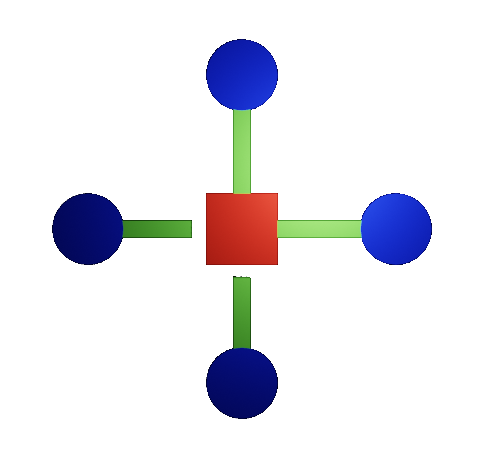

Network Types
Local Area Network (LAN)
A Local Area Network (LAN) is a geographically small network consisting of nodes, computers, or other devices. All of the connected devices are usually found within the same building or structure. LANs are used to segregate and organize large networks into smaller, more manageable pieces. These networks tend to be owned and operated by the same people who own the nodes that connect to the network. These networks were established for home-users whenever connecting 2 or more networked devices in their “Home Network”. The devices in a specific LAN are connected via a switch.
Virtual Local Area Network(VLAN)
Virtual LANs (VLANs) allow nodes to be attached virtually to a LAN, instead of physically. In essence, a VLAN acts as a WAN, but at the local level.
Metropolitan Area Network (MAN)
A Metropolitan Area Network (MAN) is between a LAN and a WAN in size. It is normally owned by an Internet Service Provider (ISP), the same companies who own and operate WANs, but has a lot of features like a LAN. Companies can use a MAN across a city to connect several offices. MANs are connected using a combination of routers and specialized switches.
Wide Area Network(WAN)
A Wide Area Network (WAN) is geographically larger than a LAN. WANs are usually owned and/or maintained by a larger company, which may use the WAN for corporate purposes or lease it out for communication. Telecommunication companies such as Charter Spectrum (formerly Time Warner Cable) and AT&T Inc. (formerly BellSouth) run WANs that provide a method for people and companies to join to other LANs and connect to global communications such as the Internet. LANs are connected to WANs, and WANs are connected to each other, using routers.
Star Network
A star network is a network in which computers are connected by one central device known as a concentrator. The concentrator manages and controls all functions of the network. In addition, the concentrator acts as a repeater for the network. A repeater is a device that strengthens the signal of the communication as it travels over the appropriate medium.
Tree Network
Tree networks are collections of star networks arranged in a hierarchy. Concentrators from each star network are connected to each other in a particular order to form the tree.

Bus Network
In a bus network, a set of clients is connected using a single shared connection line known as a bus. Bus networks are the simplest way to connect devices, but problems occur when two devices want to communicate at the same time. Bus networks typically use a collision detection/prevention method known as Carrier Sense Multiple Access (CSMA) to ensure proper data communication.

Ring Network
In a ring network, nodes are connected in a circular configuration. Data can travel either clockwise or counterclockwise around the ring, but all data must travel in the same direction. For information to be sent from one node to another, it must be sent around the ring and through each node until it reaches its destination.

Network Configurations
| Blue | Red | Green |
|---|---|---|
| Host/Client | Router/Switch | Cables |